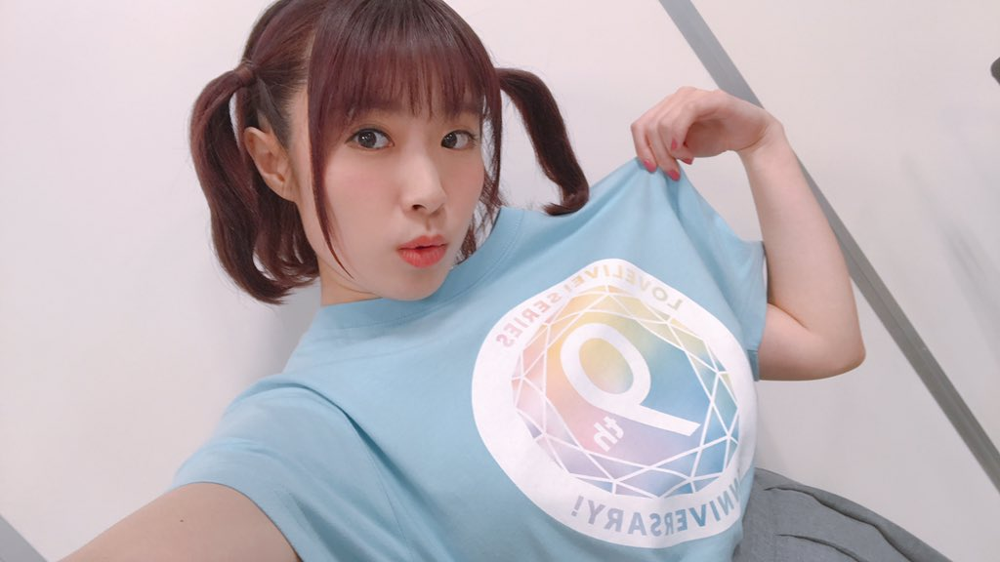

人物介紹
日本的女性聲優。長野縣出身，血型B型，經紀公司為Office-tb。
2015年獲選為『LoveLive! Sunshine!!』的黑澤露比的聲優。是個初出茅廬的新人聲優，在加入LoveLive!Sunshine!!企劃後開始漸漸受到人們關注。
擁有「文字處理實際業務檢定」2級、「硬筆書寫技能檢定」3級的證照。
2018年6月，開設個人生放送節目「ふりりんは文化」。
個性
是個開朗大方的職人、和加奈子在團體中擔任炒熱氣氛的相聲團體。
對於攝影也有極大的興趣，經常隨身攜帶富士的一次性攝像機（写ルンです），很常在與團員的約會時分享這些美麗的作品。
雖然給自己取的暱稱是ふりりん，但是包括Aqours的成員在內，大家更多稱呼為愛愛（あいあい）。是LLSS相關聲優節目的吐槽役擔當。
在某次影片裡用薯條測量身高，其結果經過測量身高為四根薯條長。
作品
電視動畫
2016
orange橘色奇蹟（佐久）